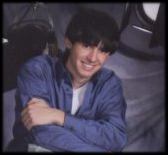

PJ Veltri is an award winning professional theatre designer and technician with strong expirience in all aspects of theatrical performance design and implementation. He has worked on over one hundred preformances functioning as everything from a pusher to stage manager to a production designer.
PJ is currently working as a freelance designer and technician based out of southeastern and middle Michigan. Prior to that he was working almost exclusively as an employee in the electric and scenic shops at Michigan State University. He also has expirience working as an Assistant Technical Director and Head Electrician for a public school district with 5 theatres ranging from black boxes to a 900+ seat proscenium with two more theatres in their final stages of construction currently. With these two new constructions, he was involved with the theatrical and architectural lighting system designs.
